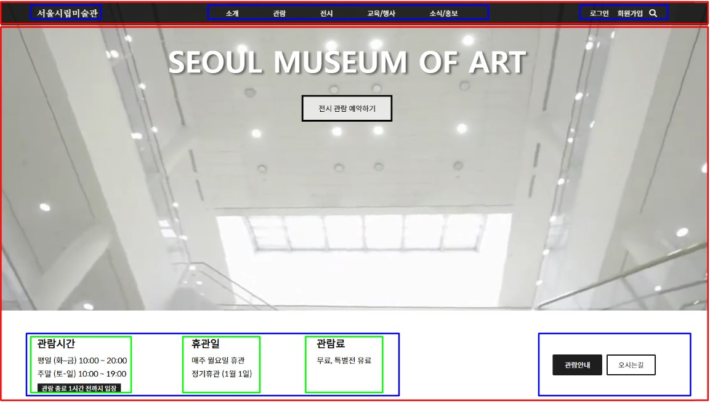
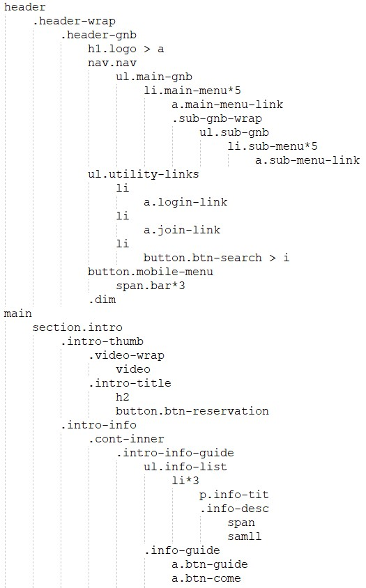
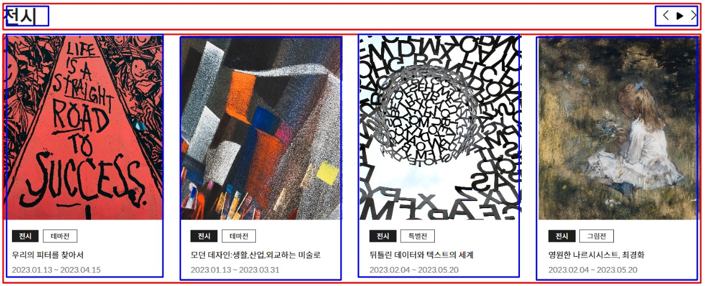
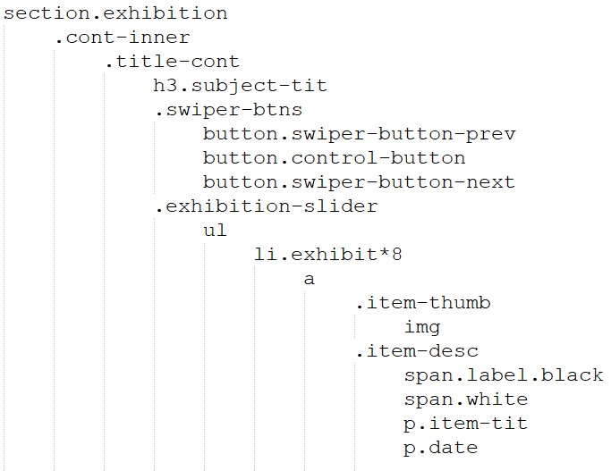
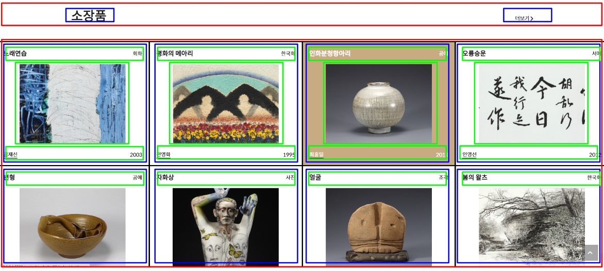
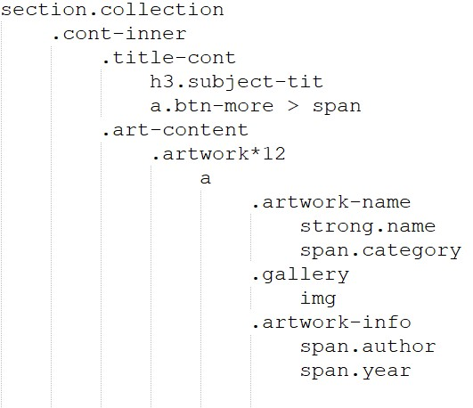
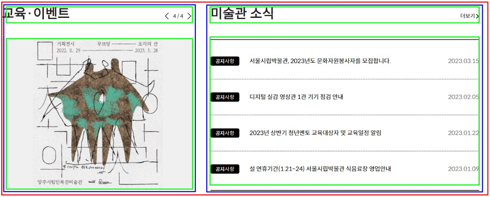
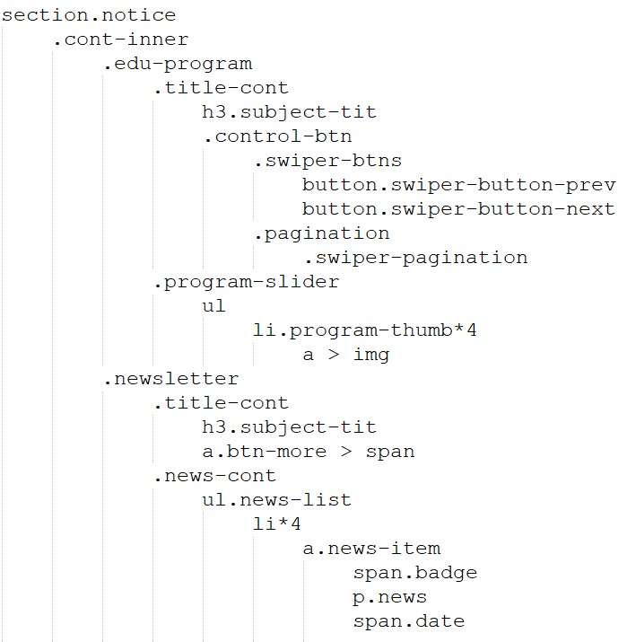
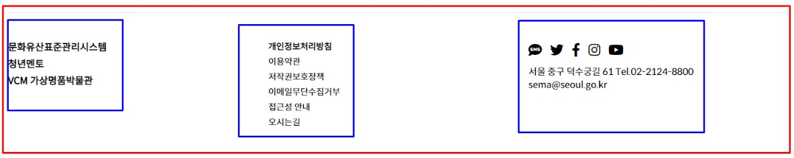

Section: intro

- ✅ 헤더는 fixed로 따라다니고 메뉴 hover시 전체메뉴가 보임
- ✅ 메뉴에 hover시 투명한 배경에서 눈에 띄게 검정으로 변경
- ✅ 메인 배너 컨텐츠는 스와이프 슬라이드 사용
- ⭕ 미술관 사이트를 찾게 될 사용자 입장에서, 미술관 이용에 필요한 정보를 메인섹션에 담았습니다.
- ⭕ 메인섹션으로 서울시립미술관에서 만든 비디오를, 상세페이지로 들어가서 보는게 아니라 눈에 띄게 보임으로써 미술관의 내부 외부 정보를 알리는 방향으로 제작하였습니다.

Section: exhibition

- ✅ 전시회 컨텐츠가 자동으로 1개씩 슬라이드 되는 형태입니다.
- ✅ 좌우 버튼 클릭과 재생, 일시정지 버튼이 작동합니다.
- ⭕ 서울시립미술관에서 주관하는 전시회를 한 눈에 볼 수 있게 배치하였습니다.

Section: collection

- ✅ 서울시립미술관의 소장품을 flex와 grid 형태로 눈에 띄게 배치했습니다.
- ⭕ 소장품의 카테고리와, 작가, 작품명, 이미지로 배치하여 한 눈에 정보를 받아들일 수 있게 작업하였습니다.

Section: notice

- ✅ 교육과 이벤트 섹션은 슬라이드 형태로 구현하였습니다.
- ⭕ 상세페이지에 들어가지 않더라도 정보를 바로 확인할 수 있게 편리함을 제공하는 ui로 제작하였습니다.

Section: footer

- ⭕ 필요한 푸터 정보는 깔끔하게 3개의 칼럼으로 배치하였습니다.

Layout width
- inner컨텐츠 1440px
Color
- #1e1e1e
- #7d7d7d
- #c9ab81
Font
- 바디 서체 SpoqaHanSansNeo-Regular
- 제목 서체 Raleway
- 주제 타이틀 font-size: 40px
- 로고 font-size: 20px